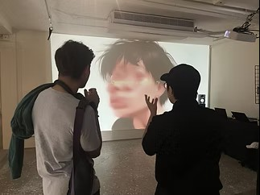
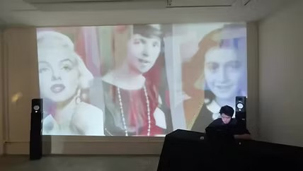
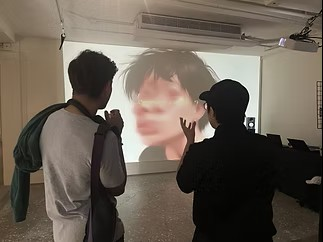
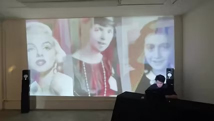

"精神抖擻~!"
Real-time AI-powered Audio-Visual Performance
Sound Production / Visual / Programming | YUN-HSUAN CHENG
Technologies
CONCEPT
This audio-reactive installation is the result of interactive experimentation using TouchDesigner and Ableton Live. It draws inspiration from the concept of "invigorating the spirit," where beyond mere survival, we channel the dormant energies within ourselves to fuel creativity. This work invites participants to engage in a moment of heightened awareness, where they leave with a renewed sense of vitality, encouraging them to live more energetically.
The piece transforms the space into an immersive concert experience, enveloping the audience in an electronic sound bath. Through rhythmic immersion, the installation seeks to awaken the desensitized and numb, urging them to adopt a more vigorous and spirited stance toward societal issues. Its goal is to spark reactions, whether positive or negative, provoking reflections on the act of resistance, particularly within the context of queer identity and the politics of coming out.
INTERACTIVE EXPERIENCE
Through audience participation, their responses are transformed into an "invigorated" attitude, regardless of their stance. The electronic sound bath, alongside the communal experience, becomes a vehicle for expressing freedom and challenging deeply ingrained societal norms.
Participants are encouraged to freely dance and break away from convention in an underground party setting, creating a space where individuals can explore their authentic selves through movement and sound interaction.
 


